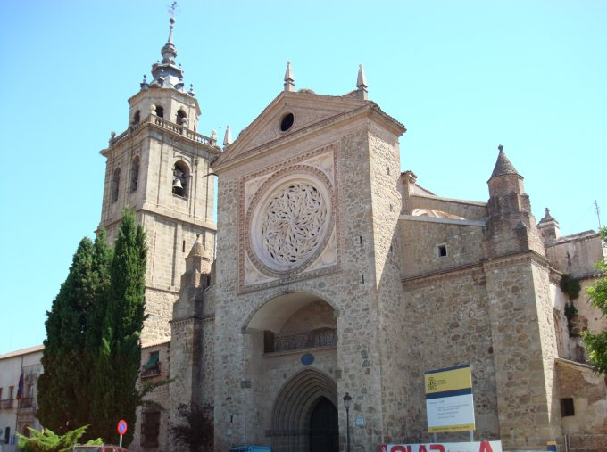
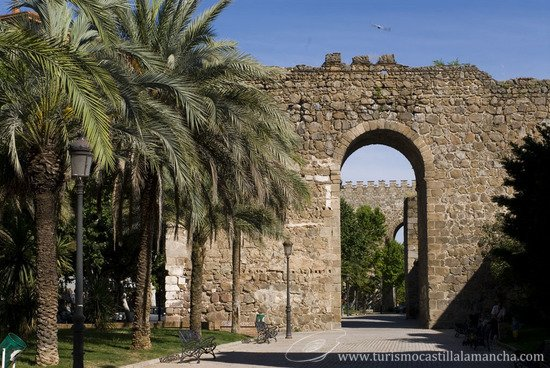

Esta modalidad educativa va a sustituir al ciclo formativo de grado medio Explotación de Sistemas Informáticos (E.S.I.)
durante el curso 2009-2010 se imparte el 2º curso de este ciclo y quedará suprimido para el curso 2010-2011.
Es un ciclo formativo de 2000 h. de duración, 2 cursos académicos y un aspecto interesante es su calificación
CINE-3 (Clasificación Internacional Normalizada de la Educación).
La competencia general de este título consiste en instalar, configurar y mantener sistemas microinformáticos,
aislados o en red, asi como redes locales en pequeños entornos, asegurando su funcionalidad y aplicando los
protocolos de calidad, seguridad y respeto al medio ambiente establecidos.
Competencia general
a) Determinar la logística asociada a las operaciones de instalación, configuración y mantenimiento de sistemas microinformáticos,
interpretando la documentación técnica asociada y organizando los recursos necesarios.
b) Montar y configurar ordenadores y periféricos, asegurando su funcionamiento en condiciones de calidad y seguridad.
c) Instalar y configurar software básico y de aplicación, asegurando su funcionamiento en condiciones de calidad y seguridad.
d) Replantear el cableado y la electrónica de redes locales en pequeños entornos y su conexión con redes de
área extensa canalizando a un nivel superior los supuestos que así lo requieran.
CODIGO
MÓDULOS
CURSO
0221.
Montaje y mantenimiento de equipo
1º
0222.
Sistemas operativos monopuesto
1º
0225.
Redes Locales
1º
0226.
Seguridad informática
1º
0227.
Servicios en red
2º
0228.
Aplicaciones Web
1º
0223.
Aplicaciones ofimáticas
2º
0224.
Sistemas operativos en red
2º
0230.
Empresa e iniciativa empresarial
2º
0231.
Formación en centros de trabajo
2º
Mi ciudad.
La leyenda y la historia explican la fundación de Talavera de la Reina. En proporciones similares, leyenda e historia se unen y aportan los elementos precisos para comprenderla. Puente sobre el lago Talavera aparece con nombre propio en el año 181 a. de C. Cuando Tito Livio nos relata la batalla entre los romano y los carpetanos, esta batalla se dio en Aebura primer nombre de Talavera.
De la Talavera visigoda destaca el regalo de Liuva II, en el año 602, una imagen de la Virgen,
a la que se denominó Virgen del Prado, la fiesta en honor de la diosa Ceres (Mondas) se cristianizó y su cortejo estuvo encaminado desde entonces en alabanza de la Virgen del Prado.

En la época musulmana continua su engrandecimiento, su nombre es ahora Talabayra y desde el 713 hasta la conquista por Alfonso VI en 1803, se eleva su muralla y se construye su alcázar en el 937 por orden
de Abderraman III.
En el 1294 Sancho IV concedió el privilegio de la celebración de las ferias "que ayan Feria en Talavera de aquí adelante para siempre". 
Lo que dio paso a la creación de la Alhóndiga, casa pública para la compraventa
de mercaderías y alrededor de la cual se establecieron posadas , comercios y puestos para el trato que desde entonces han dado carácter a la ciudad.
En el 1328 se casa Alfonso XI con María de Portugal y entre los regalos que recibe se encuentra la ciudad de Talavera que a partir de esa fecha se llamará Talavera de la Reina.